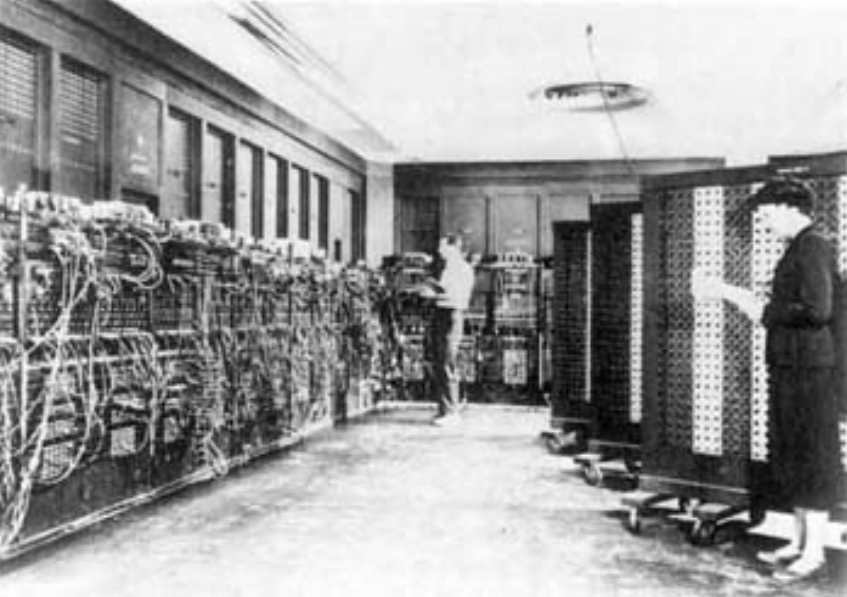
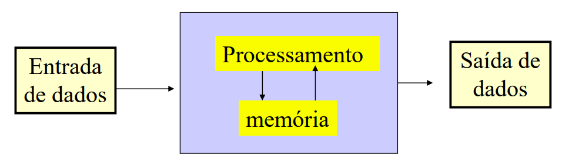

1943 - Alan TURING, constrói a
primeira geração de computadores
modernos, que utilizam válvulas
1945 - Primeiro Computador Eletrônico,
Integrador e Calculadora Numérica
Eletrônica – ENIAC (EUA)
COLOSSUS, Inglaterra, sua programação era feita com fios. 1939 - 1943
ENIAC, projetado durante a Segunda Guerra - cálculos de tiros de artilharia.
(Eletronic Numerical Integrator Analyzer and Computer)
1945 ... - Estabelecida a arquitetura básica de um computador, por John Von Neumann e sua equipe.
